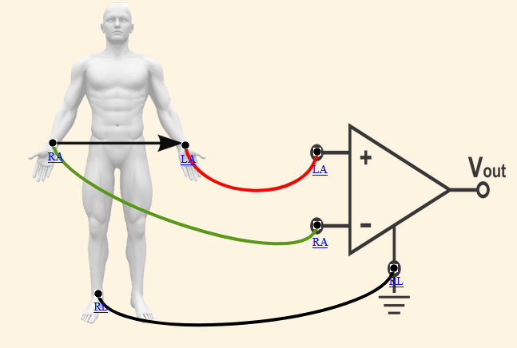

Lead 1 -
It is the signal between negative RA and positive LA electrodes.
Einthoven's Triangle


STEP 1 : Make all the Correct Connections.
1. Connect Left Arm Electrode (LA) of human to the positive point (LA) of op-amp circuit.
2. Connect Right Arm Electrode (RA) of human to the negative point (RA) of op-amp circuit.
3. Connect Right Leg Electrode (RL) of human to the ground point (RL) of op-amp circuit.
STEP 2 : Click on check button to check for Correct Connections.
STEP 3 : If Connections are not correct click on reset button for reset connections.
STEP 4 : click on print button to save the observations.